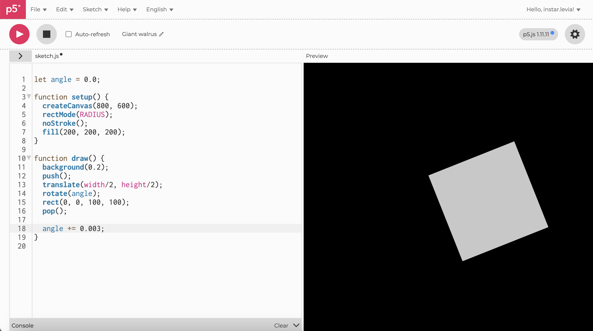
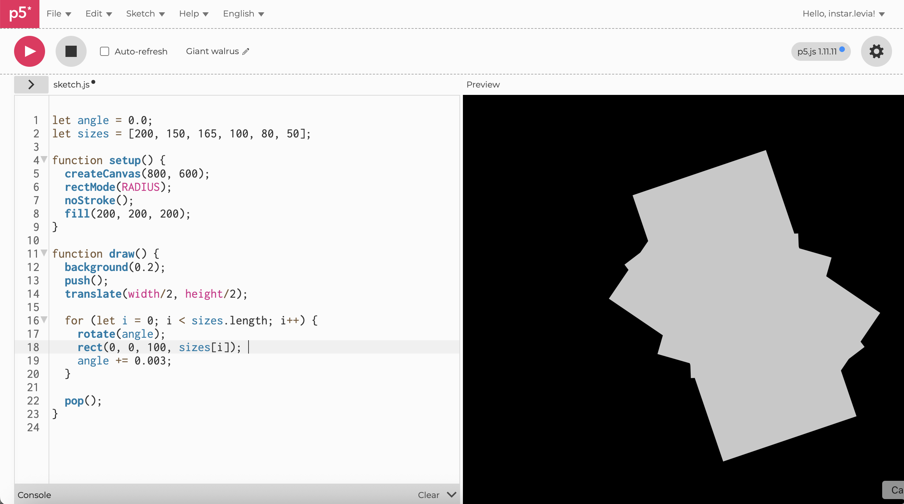
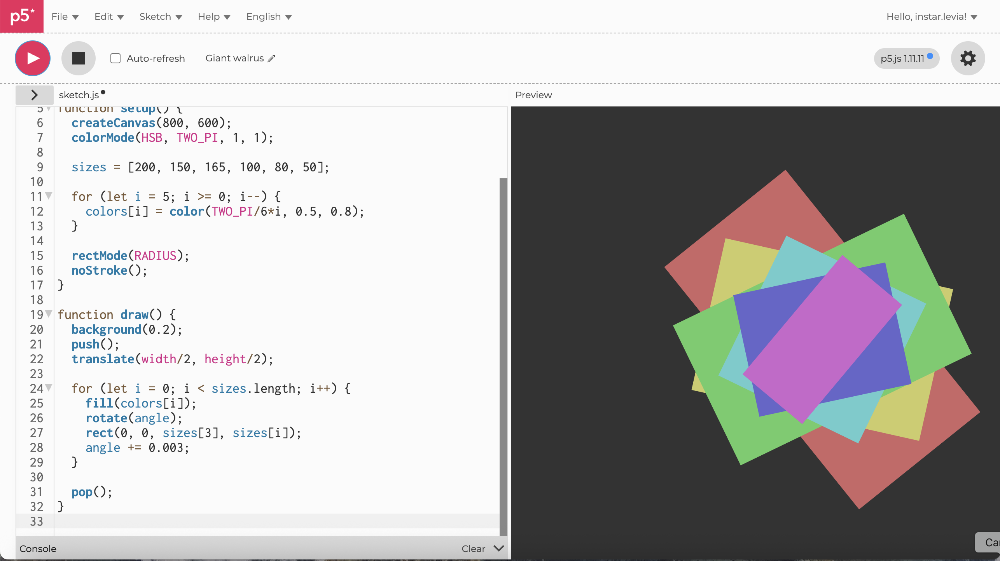

Single Rotating Rectangle
This step introduces one rectangle rotating around the center of the canvas, establishing the core animation idea: a centralized rotational motion.
Multiple Stacked Rotating Rectangles
Building on the single rotation, additional rectangles of different sizes are layered together, all rotating with the same accumulated angle, creating a multi-layered geometric structure.
Adding a Color Gradient
Each rectangle receives an HSB-based gradient color, enhancing visual depth and hierarchy while preserving the original layered rotational movement.
Transition from Rectangles to Ellipses
The rectangles are replaced with ellipses, shifting the geometry from angular to circular forms and preparing the structure for its evolution into ring-like shapes.

Ellipses Become Line-Based Rings
Filled ellipses are converted into stroked outlines, transforming solid shapes into minimal circular rings and shifting the visual emphasis from object form to rotational trajectories.
Rings Become Dynamic Arcs
Ellipses are replaced with arcs, each with its own radius, angular span, and sinusoid-driven rotation speed, fully transforming the structure into a set of flowing, colorful, dynamic rotating arcs.